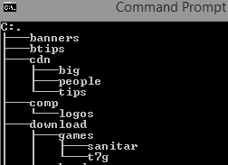

Available DOS+
Tree syntax
TREE [Drive:[[Path] [/F] [/A]
Drive:\Path Drive and directory containing disk for display of directory structure.
/F Displays file names in each directory.
/A ext characters used for linking lines, instead of graphic characters. /a is used with code pages that do not support graphic characters and to send output to printers that do not properly interpret graphic characters.
